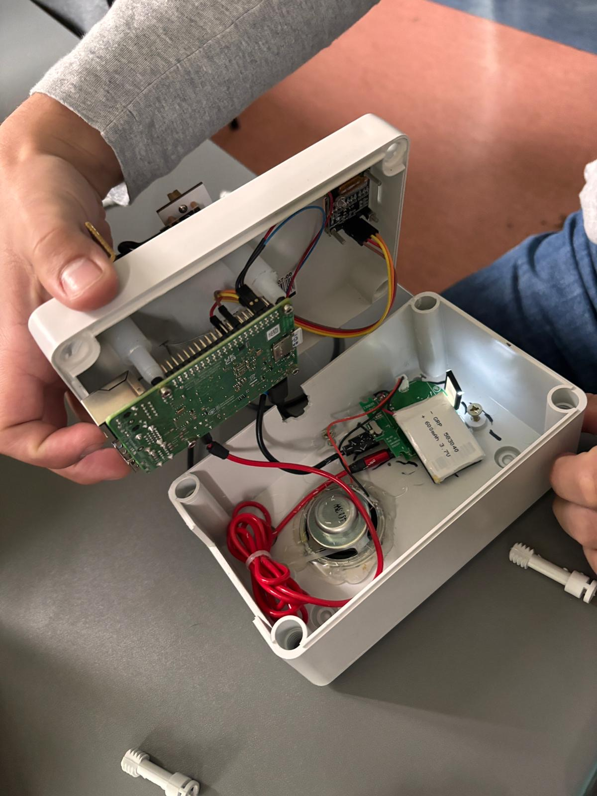

System rozpoznawania kart do gry
Rozpoznawanie kart do gry w czasie rzeczywistym, w całości na urządzeniu — na Raspberry Pi 4. Dostrojony model YOLOv8n, wszystkie 52 karty i polski asystent głosowy, który odczytuje każdą kartę na głos.
Adnotacja Na potrzeby CV komunikaty głosowe systemu są po angielsku; reszta interfejsu — m.in. ekran OLED — pozostaje polska.
Przegląd
Studia mgr · projekt z UMProjekt zespołowy (6 osób) na przedmiot Uczenie Maszynowe (studia magisterskie, semestr letni 2026). Temat był dowolny — wybraliśmy najbardziej namacalny: rozpoznawać karty do gry w czasie rzeczywistym i wdrożyć to na urządzenie embedded — nie w notebooku, tylko w fizycznym pudełku, które trzymasz w ręku.
Wszystko dzieje się lokalnie na Pi: kamera łapie klatkę, dostrojony model YOLOv8n wykrywa kartę, maszyna stanów decyduje, kiedy jest pewna, a polski głos ją ogłasza — równolegle mały wyświetlacz OLED pokazuje figurę, kolor i pewność. Bez chmury, bez internetu w trakcie działania.
Mój obszar w zespole obejmował ścieżkę wdrożenia na Raspberry Pi oraz pipeline rozpoznawania — doprowadzenie modelu do tego, by na prawdziwych, fizycznych kartach zachowywał się tak samo dobrze jak na zbiorze walidacyjnym.
Sprzęt
pudełko, które trzymasz w ręku
Kolorowe kamery wciąż myliły czerwone karty — różne odcienie czerwieni sprawiały, że model tracił pewność. Przełączenie kamery w tryb monochromatyczny całkowicie usunęło problem balansu kolorów: każda karta widziana jest w skali szarości i rozpoznawana po kształcie symboli i cyfr, a nie po kolorze. Czerwone i czarne karty wykrywane są teraz jednakowo dobrze.
- Raspberry Pi 4jednostka centralna · 4 GB RAMBookworm 64-bit · 5V/3A
- Kamera CSICamera Module · taśma640×480 · gray · AF
- OLED SSD1306128×64 · I2C @ 0x3Cluma.oled
- Głośnik customjack 3,5 mm · ALSApygame mixer
- Akumulator LiPow obudowie urządzenia600 mAh · 3.7V
- Karta SD + WiFistorage i deploy SSH32 GB · Class 10
Włączasz Pi, a usługa systemd uruchamia wszystko automatycznie — bez klawiatury, bez monitora. W 30–90 sekund wita Cię słowem „Witaj” i jest gotowe do skanowania.
Pipeline rozpoznawania
klatka → głosJedna klatka przechodzi przez siedem etapów — od surowych pikseli po wypowiedzianą nazwę karty. Każdy etap robi jedną rzecz i przekazuje wynik dalej.
Kamera CSI camera.py
Klatka w skali szarości z Pi Camera Module. Jeden wrapper ukrywa różnicę między picamera2 na Pi a cv2.VideoCapture przy testach na PC.
Preprocess preprocess.py
Balans bieli, wzmocnienie czerwieni i saturacji — zbudowane pod kolorową kamerę na PC. Na monochromatycznej kamerze Pi te kroki są w większości pomijane: obraz jest już czysty.
Detektor YOLOv8 detector.py
Dostrojony model YOLOv8n uruchamiany z Test-Time Augmentation zwraca listę detekcji — etykieta, pewność, bounding box.
Korekta koloru color_aware.py
Dla każdej detekcji rzeczywisty kolor symbolu (czerwony / czarny) klasyfikowany jest w HSV. Zgodność podbija pewność ×1.30, niezgodność karze ją ×0.30 — eliminując pomyłki czerwone–czarne.
Index Tracker index_tracker.py
Karta ma cztery indeksy w rogach. Jeśli w jednej klatce pojawią się dwie lub więcej detekcji tej samej klasy, karta jest potwierdzona — skraca to reakcję z ~1,5 s do ~150 ms względem trackera liczącego klatki.
Announcer announcer.py · state machine
Serce interakcji — siedmiostanowa maszyna: powitanie → oczekiwanie → stabilizacja (3 s) → ogłoszenie → powtórka → prośba o następną → oczekiwanie na zabranie. Decyduje, co i kiedy powiedzieć.
Audio + Display audio_player.py · display.py
Dwa wyjścia równolegle: polski plik MP3 ogłasza kartę przez pygame, a warstwa wyświetlacza auto-wykrywa OLED → LCD → HDMI i pokazuje figurę, kolor oraz pasek pewności.
Dataset
Roboflow Universe · Public DomainŹródło: publiczny projekt playing-cards-ow27d na Roboflow Universe (v4, format YOLOv8). Etykiety w notacji angielskiej (KH, QD, AS…) centralna tablica tłumaczeń mapuje na polskie nazwy, symbole Unicode i slugi audio — więc „KH” staje się „Król kier” i krol_kier.mp3.
Trening i fine-tuning
YOLOv8n · RTX 3060Transfer learning z YOLOv8n pretrenowanego na COCO (~3,2 mln parametrów). Jeden szczegół miał duże znaczenie: flip poziomy i pionowy były wyłączone — karty są asymetryczne, więc lustrzane odbicie to inna karta, a flip zepsułby etykiety.
Spadek na epoce 41 to moment włączenia agresywnej augmentacji kolorów w fine-tuningu — model na chwilę „głupieje” na trudniejszych przykładach, po czym przebija swój poprzedni rekord.
Historia warta opowiedzenia: domain shift
Model v1 miał świetne metryki na zbiorze walidacyjnym — ale na fizycznych kartach, które faktycznie kupiliśmy, czerwone karty rozpoznawane były z pewnością tylko 30–50% i często myliły się między sobą. Talia treningowa miała po prostu węższy zakres czerwieni niż rzeczywistość. Zamiast zbierać nowy zbiór, zrobiliśmy fine-tuning z 3× mocniejszą augmentacją odcienia, by model nauczył się, że „Król to Król niezależnie od dokładnego odcienia czerwonego”.
Na papierze metryka wzrosła tylko o +2,5% (mAP50-95 0,770 → 0,789). W rzeczywistości pewność na czerwonych kartach niemal się podwoiła — przypomnienie, że metryki walidacyjne nie oddają w pełni zachowania w środowisku docelowym.
Wyniki
v1 vs v2 · walidacja na zbiorze Roboflow| Metryka | yolo_cards.pt · v1 | yolo_cards_v2.pt · v2 | Zmiana |
|---|---|---|---|
| mAP50 | 0.995 | 0.995 | = |
| mAP50-95 | 0.770 | 0.789 | +2.5% |
| Precision | 0.999 | — | |
| Recall | 1.000 | — | |
| cls_loss | 0.320 | 0.340 | ≈ |
| Rozmiar pliku | 23.44 MB | 5.98 MB | fp16 |
Dla kontekstu — YOLOv8n na benchmarku COCO osiąga mAP50-95 ≈ 0,37. Nasze 0,789 jest około 2× wyższe: rozpoznawanie kart jest łatwiejsze niż COCO — klasy są stylistycznie spójne, symbole charakterystyczne, a tło kontrolowane.
Na fizycznym Raspberry Pi z kamerą monochromatyczną wszystkie 52 karty rozpoznawane są z pewnością 90–95%, bez podziału na czerwone i czarne. Cały pipeline — capture, YOLO, tracker, announcer — działa z prędkością około 5 FPS, co w zupełności wystarcza, gdy człowiek podkłada karty pojedynczo.
Przebieg demo
jak wygląda jedno skanowanie- Startsystemd uruchamia
main.py; init kamery, detektora, audio i OLED. - Powitanie„Witaj” → „Rozpoczynamy” → „Proszę podstawić kartę”
- Karta podstawionaYOLO wykrywa indeksy w rogach; dwie tej samej klasy → potwierdzenie. „Skanuję kartę”.
- Stabilizacja (3 s)OLED pokazuje kandydata + pasek 0–100%. Jeśli klasa się zmieni → reset (anti-noise).
- Ogłoszenie„Karta rozpoznana” + nazwa karty (
krol_kier.mp3) - Powtórka i następnaPo 2 s powtórka nazwy; po kolejnych 2 s: „Proszę o następną kartę”.
- Zabranie → pętlaKarta zabrana → „Czekam na kartę” → powrót do kroku 3. Inna karta od razu startuje nowe skanowanie.
- Ctrl+C„Dziękuję” → „Do zobaczenia” → OLED clear
Adnotacja Przebieg powyżej opisuje wersję polskojęzyczną, na której projekt powstał. Na potrzeby CV język komunikatów systemu został zmieniony na angielski; reszta interfejsu — m.in. ekran OLED — pozostaje polska.
Kod i stack
src/ · app/ · deploy